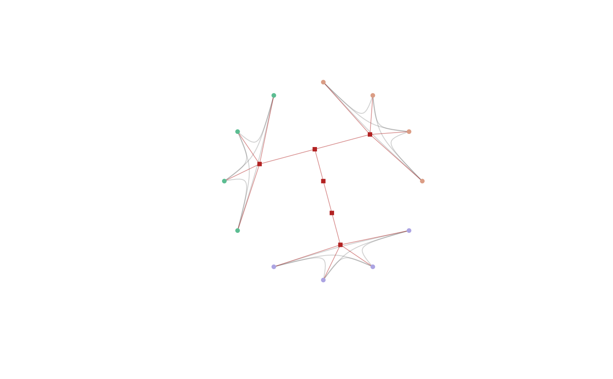

Draw a nested or ranked block model hierarchy
plot_hierarchy.Rdplot_hierarchy() is a base-R counterpart of graph-tool's
NestedBlockState.draw(). Vertices lie on the unit circle, ordered by the
hierarchy. Groups sit at radii that shrink towards the root at the centre. Edges
are drawn as splines through their endpoints' common ancestors (hierarchical
edge bundling, Holten 2006).
plot_ranked_hierarchy() draws a vertical rank-ordered layout for flat and
nested ranked stochastic block models, placing vertices at vertical positions
determined by their inferred group rank \(u_r\) and colouring curved directed
arcs by flow direction (upstream, lateral, and downstream).
Usage
plot_hierarchy(state, beta = 0.8, vertex_col = NULL,
edge_col = grDevices::adjustcolor("grey30", 0.25), vertex_cex = 0.6,
show_tree = TRUE, main = NULL, ...)
plot_ranked_hierarchy(state,
upstream_col = grDevices::adjustcolor("#4878CF", 0.35),
downstream_col = grDevices::adjustcolor("#D65F5F", 0.55),
lateral_col = grDevices::adjustcolor("#333355", 0.25),
vertex_col = NULL, vertex_cex = 0.85, curve = 0.15,
show_ranks = TRUE, show_legend = TRUE, main = NULL, ...)Arguments
- state
For
plot_hierarchy(), a nested block state (including nested weighted, layered, and ranked states). Forplot_ranked_hierarchy(), a flat or nested ranked block state fromranked_block_state,minimize_ranked_blockmodel_dl,nested_ranked_block_state, orminimize_nested_ranked_blockmodel_dl.- beta
Edge bundling strength between 0 (straight lines) and 1 (edges follow the hierarchy).
- vertex_col
Vertex colours; by default, one colour per level-0 group.
- edge_col
Edge colour, recycled over edges.
- vertex_cex
Vertex symbol size.
- show_tree
Whether to draw the hierarchy tree.
- upstream_col, downstream_col, lateral_col
Colours for upstream (\(u_i < u_j\)), downstream (\(u_i > u_j\)), and lateral (\(u_i = u_j\)) directed edges in
plot_ranked_hierarchy().- curve
Curvature applied to directed edge splines in
plot_ranked_hierarchy()(0draws straight segments).- show_ranks
Whether to draw horizontal guide lines at each inferred rank tier.
- show_legend
Whether to display a legend with upstream, lateral, and downstream edge counts.
- main
Optional title.
- ...
Passed to
points()for the vertices.
Details
In plot_hierarchy(), vertex positions are deterministic and evenly spaced
rather than computed with graph-tool's radial tree layout, and edge direction is
not shown. In both layouts, self-loops are omitted.
Examples
g <- graph_create(12, directed = FALSE)
graph_add_edges(g, do.call(rbind, lapply(list(1:4, 5:8, 9:12),
function(v) t(combn(v, 2)))))
state <- nested_block_state(g, list(rep(1:3, each = 4), c(1, 1, 2), c(1, 1)))
plot_hierarchy(state)
